Méthodologie de gestion de projet
Agile
Sommaire
- 1 - Agile, ça vient d'où ? c'est quoi ?
- 2 - L'approche Agile
- 3 - Zoom sur le manifest Agile
- 4 - Le futur de l'Agilité
Partie 1 / 4
Agile, c'est quoi ?
Selon vous, quand a été signé le manifest Agile ?
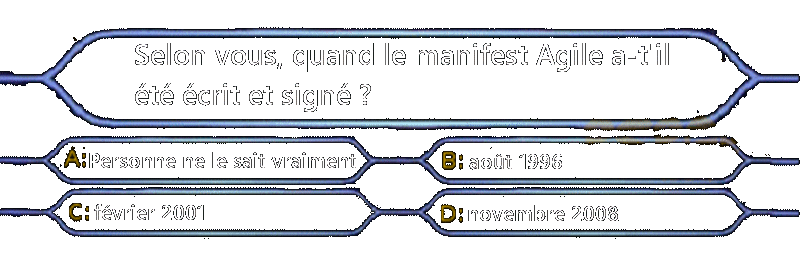Historique
Les méthodes Agiles existaient déjà et étaient déjà appliquées avant la création du manifest Agile mais chacun l'applique à sa façon avec plus ou moins de succès.
17 spécialistes en développement logiciel se réunissent et s'accordent sur le fait que les méthodes dites traditionnelles ne sont pas adaptées à une évolution rapide et concurrentielle du marché et des organisations.
A la fin de cette rencontre qui se tient en février 2001, le manifest en développement Agile de logiciels (que l'on nomme désormais manifest Agile) est créé.
Selon vous, l'Agilité, c'est quoi ?
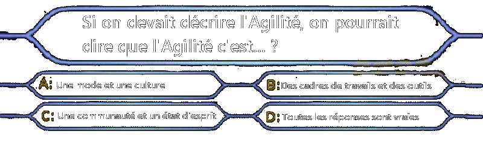Une mode est une culture
Une mode : de plus en plus d'organisations se disent Agile ou souhaitent le devenir. Tout un marché a été créé autour de ce thème et il existe même des postes dédiés (Scrum Master, Product Owner, etc..)
Une culture : un ensemble de connaissance et de facultés propres à l'Agilité, que l'on peut acquérir via des livres, des formations, etc..
Des cadres de travail et des outils
Des cadres de travail : il y en a des dizaines et des dizaines, on citera par exemple Scrum, XP, Crystal Clear, Nexus, Evidence-Based, Safe, etc...
Des outils : il s'agit même d'une véritable boite à outils qui continue sans cesse d'être enrichie, parmi ces outils on pourra trouver le Planning Poker, le Burn Down Chart, l'Agile Board, etc...
Une communauté et un état d'esprit
Une communauté : il existent des conférences dédiées, des blogs et même des chaines Youtube qui ne parlent que de ça !
Un état d'esprit : on va y revenir de façon plus précise dans la suite de cette présentation, mais c'est le point le plus important car sans adhésion à cet état d'esprit, Agile est très souvent voué à l'échec et génère de la frustration.
L'Agilité c'est quoi ?
Vous l'aurez compris, il s'agit de tout ça à la fois, et donc toutes les réponses citées sont vraies.
Partie 2 / 4
L'approche Agile
Qu'est-ce qui est variable dans un projet en fonctionnement Agile ?
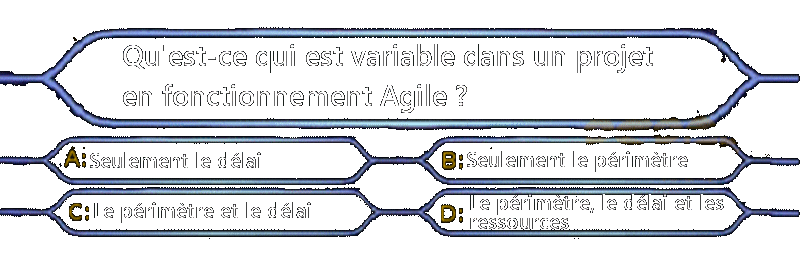L'Iron Triangle Agile
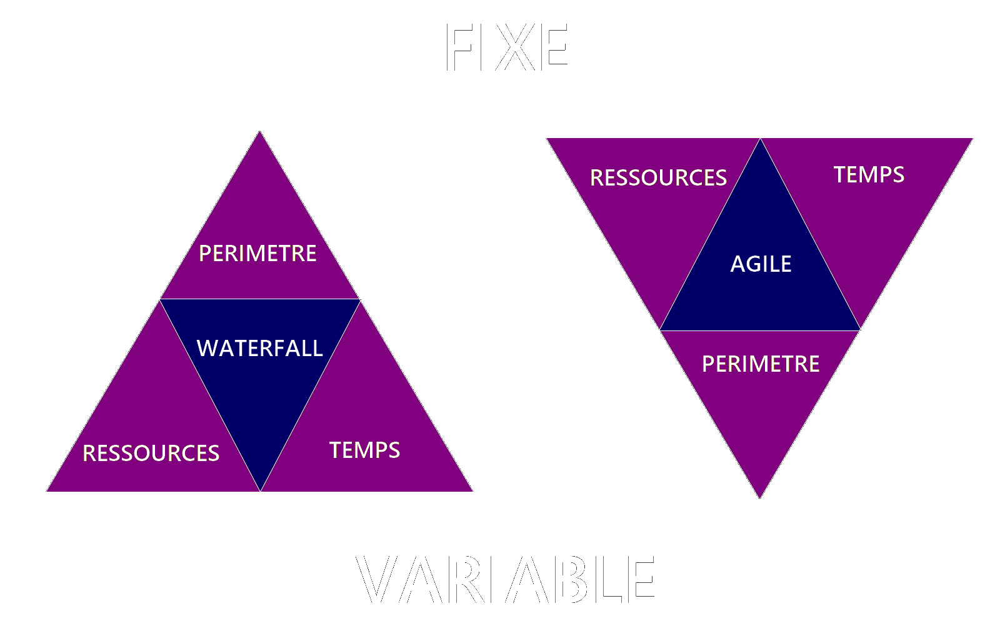Par quoi commencer la tranformation Agile d'une organisation ?
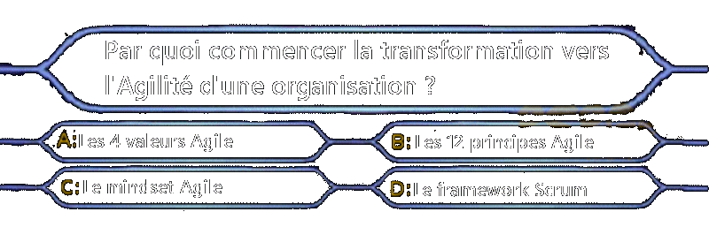La pyramide Agile
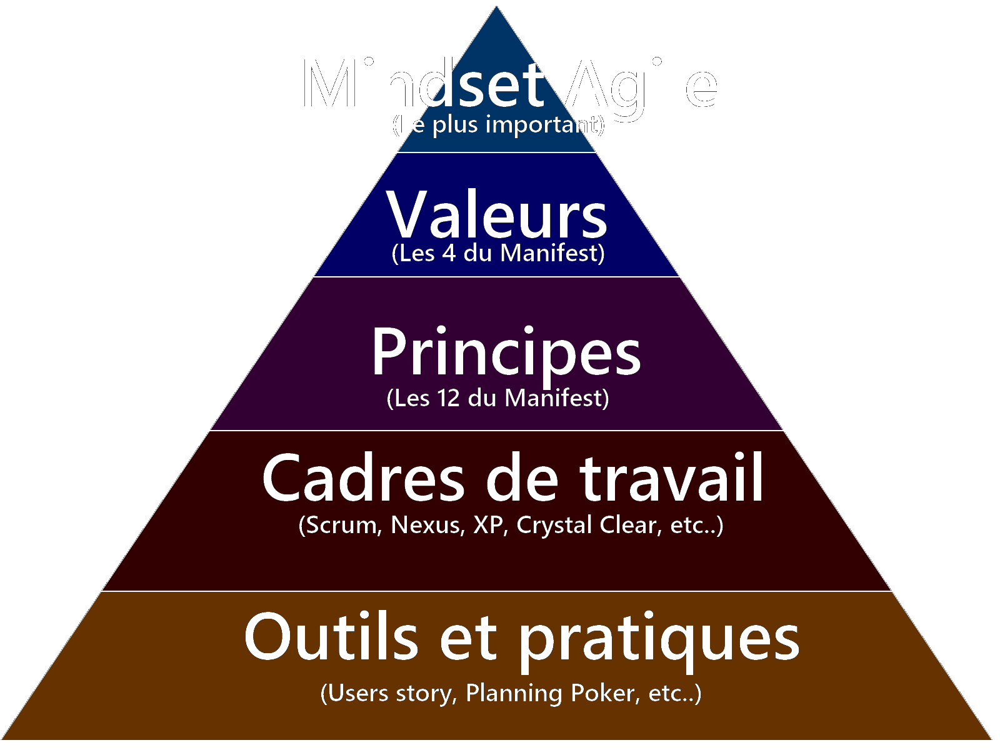Partie 3 / 4
Zoom sur le manifest Agile
Les signataires (1/3)
Kent Beck : cofondateur de l'eXtreme Programming (XP) et co-créateur de JUnit
Mike Beedle : référence sur Scrum
Arie Van Bennekum : cofondateur de DSDM/RAD
Alistair Cockburn : créateur de Crystal Clear
Ward Cunningham : cofondateur de l'eXtreme Programming (XP) et créateur du Wiki
Martin Fowler : cofondateur de DSDM/RAD et référence sur l'XP et le refactoring
Les signataires (2/3)
James Grenning : créateur du Planning Poker et référence sur C++
Jim Highsmith : créateur de l'Adaptative Software Development (ASD)
Andrew Hunt : fondateur de l'Agile Alliance et référence sur le développement logiciel
Ron Jeffries : cofondateur de l'eXtreme Programming (XP)
Jon Kern : référence sur la conception logicielle
Brian Marick : créateur du quadrants des tests Agiles et référence sur différents langages de développement
Les signataires (3/3)
Robert C. Martin : fondateur du Software Craftsmanship et référence sur les bonnes pratiques de développement
Steve Mellor : créateur de l'Executive UML et de la méthode Object Oriented Analysis (OOA)
Ken Schwaber : cofondateur de Scrum
Jeff Sutherland : cofondateur de Scrum
Dave Thomas : cofondateur de DSDM/RAD et référence sur Ruby
Les 4 valeurs Agile
Les individus et leurs interactions plus que les processus et les outils
Des logiciels opérationnels plus qu’une documentation exhaustive
La collaboration avec les clients plus que la négociation contractuelle
L’adaptation au changement plus que le suivi d’un plan
Les 12 principes Agile (1/3)
Notre plus haute priorité est de satisfaire le client en livrant rapidement et régulièrement des fonctionnalités à grande valeur ajoutée.
Accueillez positivement les changements de besoins, même tard dans le projet. Les processus Agiles exploitent le changement pour donner un avantage compétitif au client.
Livrez fréquemment un logiciel opérationnel avec des cycles de quelques semaines à quelques mois et une préférence pour les plus courts.
Les utilisateurs ou leurs représentants et les développeurs doivent travailler ensemble quotidiennement tout au long du projet.
Les 12 principes Agile (2/3)
Réalisez les projets avec des personnes motivées. Fournissez-leur l’environnement et le soutien dont ils ont besoin et faites-leur confiance pour atteindre les objectifs fixés.
La méthode la plus simple et la plus efficace pour transmettre de l’information à l’équipe de développement et à l’intérieur de celle-ci est le dialogue en face à face.
Un logiciel opérationnel est la principale mesure d’avancement.
Les processus Agiles encouragent un rythme de développement soutenable. Ensemble, les commanditaires, les développeurs et les utilisateurs devraient être capables de maintenir indéfiniment un rythme constant.
Les 12 principes Agile (3/3)
Une attention continue à l’excellence technique et à une bonne conception renforce l’Agilité.
La simplicité – c’est à dire l’art de minimiser la quantité de travail inutile – est essentielle.
Les meilleures architectures, spécifications et conceptions émergent d’équipes auto-organisées.
A intervalles réguliers, l’équipe réfléchit aux moyens de devenir plus efficace, puis règle et modifie son comportement en conséquence.
Partie 4 / 4
Le futur de l'Agilité
Le futur de l'Agilité
Au fur et à mesure des années, l'Agilité a été perçu par certains comme un nouveau produit à vendre plus que comme un mouvement de pensées bienveillant nécessitant un changement de mentalité.
Cela a conduit certaines personnes, dont quelques-uns des signataires du manifest Agile, à faire de nouvelles propositions pour renouer avec l'état d'esprit Agile.
Cette remise en question a conduit à plusieurs chemins d'améliorations : un retour aux sources de l'Agilité, une mise à jour du manifest Agile et le lancement de nouveaux mouvements
La proposition d'Alistair Cockburn, un des signataires du manifest Agile
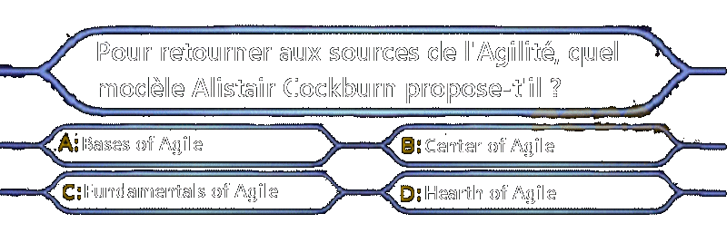Hearth of Agile
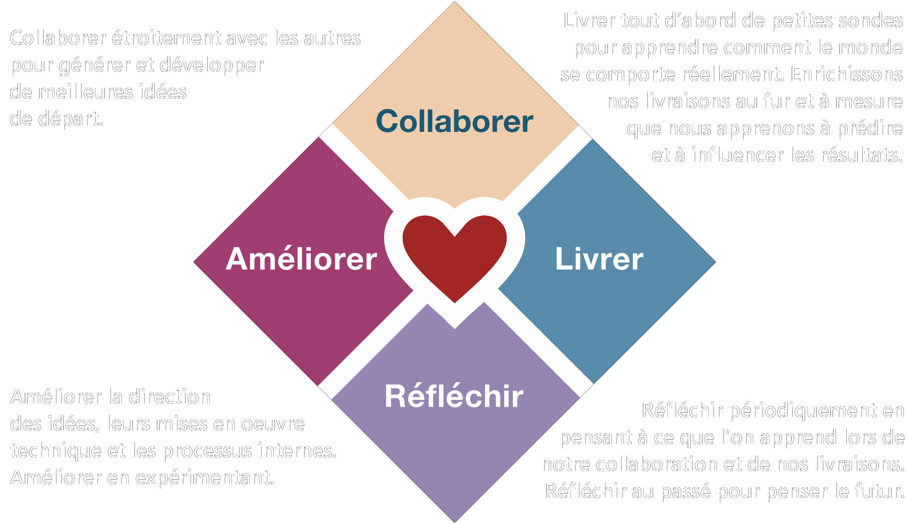La proposition du CEO d'Industrial Logic
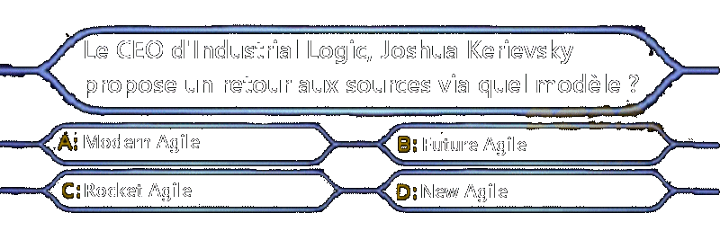Modern Agile
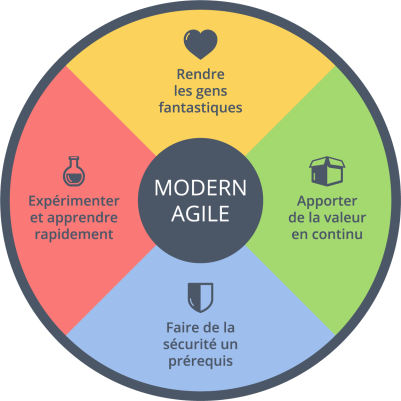Différentes versions de management
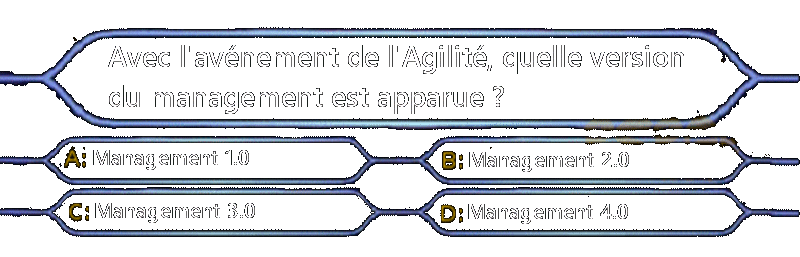Management 3.0
Management 1.0 : vision tayloriste où les maîtres mots sont "Command & Control"
Management 2.0 : les employés deviennent des "collaborateurs" avec qui la hiérarchie veut bien partager quelques informations leur permettant ainsi de faciliter le travail
Management 3.0 : avec l'avénement de l'Agilité, la hiérachie se tranforme en servant-leader et sert avant tout de support aux équipes pour la prise de décision
La proposition de Robert C. Martin, un des signataires du manifest Agile
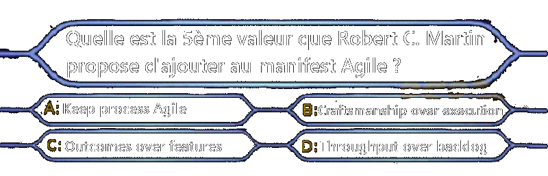Craftsmanship over execution
En 2008, Robert C. Martin propose Craftsmanship over execution comme 5ème valeur du manifest pour mettre en avant le savoir-faire de l'artisanat avant la simple réalisation.
La proposition n'ayant pas été intégrée dans le manifest mais suscitant tout de même beaucoup d'adhésion, une réunion est tenue en 2009 dans l'Illinois.
Au terme de cette réunion, un nouveau manifest est créé, celui de l'artisanat logiciel, ou en anglais du Software Craftsmanship
Les infos de la fin
Lequel est un outil Agile que l'on va utiliser ?
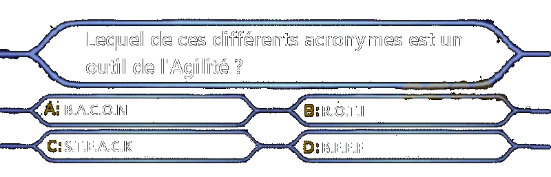R.O.T.I
R.O.T.I pour Return Of Time Invested
Pouvez-vous donner une note de 1 à 5 à cette présentation avec :
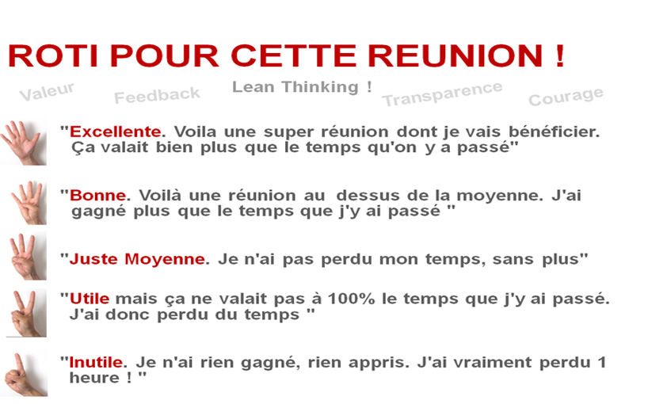Qu'est-ce que je pourrais améliorer à cette présentation pour augmenter votre note ?
Gardons contact
En cas de questions, n'hésitez pas à me contacter : jimmy.rundstadler@davidson.fr
Vous pouvez retrouver toutes les informations de cette présentation et un parcours d'introduction à l'Agilité sur mon blog : Kaizen Developer
Merci de votre attention

Sources disponibles sur github.com/Jorg722